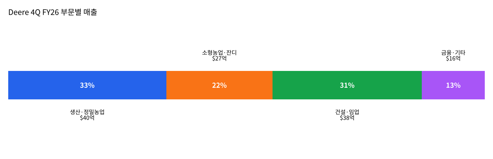
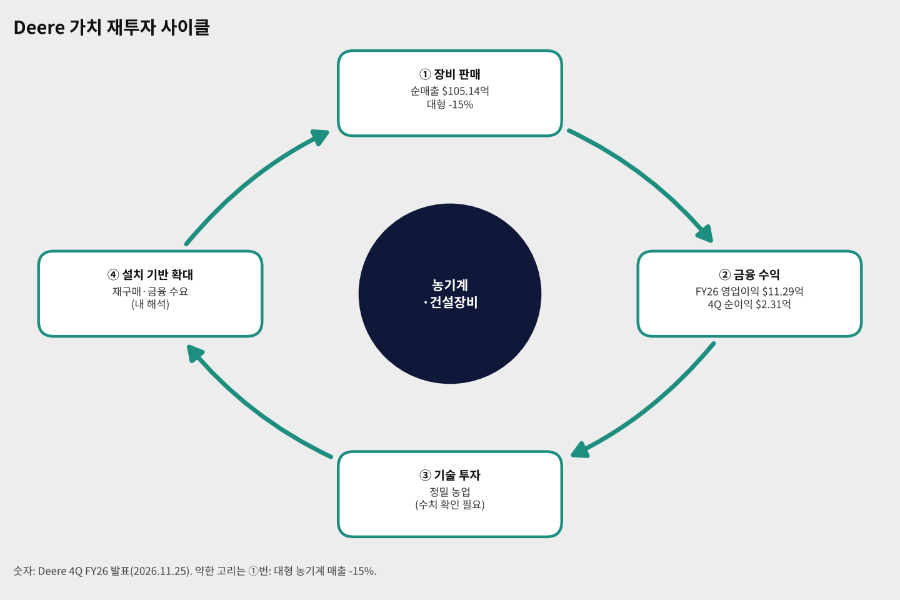

Deere는 농가와 건설 현장에 장비를 팔고, 구매자에게 금융도 제공한다. 농산물 가격과 농가 소득이 대형 농기계 수요를 좌우한다. 이번 분기는 대형 농기계가 약했고 소형·건설이 받쳤다.
| 항목 | 내용 |
|---|---|
| 종목 | Deere (DE) · NYSE · 산업재(농기계·건설장비) · 일리노이 몰린 |
| 최근 분기(4Q FY26) | 매출·수익 $121.15억(-2%), 순이익 $10.51억, EPS $3.89 |
| 부문 | 생산·정밀농업, 소형농업·잔디, 건설·임업, 금융 |
| FY26 합계 | 매출·수익 $477.0억(+4%), 순이익 $48.6억(-3%), EPS $17.95 |
| 직원 수 | 약 73,100명(트레이딩뷰) |
| 멀티플 | PER·PEG·P/S는 08~10 항목 표 참조 |
| 직책 | 인물 | 역할·특징 |
|---|---|---|
| 회장·CEO | John C. May | "대형 농기계에서 북미를 중심으로 개선 초기 신호가 보인다"고 설명(발표문) |
| CFO | Josh Jepsen | FY27 가이던스와 연금 정산 비용 설명 담당(확인 필요) |
경영 스타일: 사이클 대응. 재고와 주문을 조절해 바닥 구간에서도 마진을 지키는 방식이다. CEO는 이번 사이클 결과가 지난 사이클 같은 시점보다 구조적으로 강하다고 했다.
자율 주행·정밀 파종 기술을 장비에 넣어 농가 효율을 높인다(회사 설명).
가이던스는 대형 농기계 매출 +5~15%를 제시했다. 숫자 근거는 발표문 기준이다.
다음 실적발표는 세 가지 질문에 답하는 자리다.
1. 대형 농기계(생산·정밀농업)가 FY27에 회복하나?
2. 소형농업·건설이 대형 부진을 계속 메우나?
3. 금융 부문 순이익이 가이던스대로 회복하나?
한 줄 판정 규칙: 첫 질문의 대형 농기계가 가이던스대로 회복하면 약한 고리가 풀리고, 주문이 늘지 않으면 FY27 이익 하단 쪽으로 간다.
일정: 1Q FY27(2026.11.2~2027.2) 실적은 2027년 2월 중순으로 보이나 회사 확정 일정은 확인 필요. 위 현재값은 4Q FY26 발표(2026.11.25) 기준이다.
| 분기 | 매출 | 순이익 | EPS | 조정 EPS | 특이 사항 |
|---|---|---|---|---|---|
| 1Q FY25 | $85.2억 | $8.7억 | 3.19 | 3.19 | |
| 2Q FY25 | $127.6억 | $18.0억 | 6.64 | 6.64 | |
| 3Q FY25 | $120.2억 | $12.9억 | 4.75 | 4.75 | |
| 4Q FY25 | $123.9억 | $10.7억 | 3.93 | 3.93 | |
| 1Q FY26 | $96.1억 | $6.6억 | 2.42 | 2.42 | |
| 2Q FY26 | $133.7억 | $17.7억 | 6.55 | 6.55 | |
| 3Q FY26 | $126.1억 | $13.8억 | 5.09 | 5.10 | 건설·임업 +18%, 농기계 -6% |
| 4Q FY26 | $121.2억 | $10.5억 | 3.89 | 3.89 | 농기계 -15%, 소형 +10%, 건설 +12% |
Deere 회계연도는 11월에 시작한다(4Q FY26은 2026.11.1 종료). 4Q FY26은 회사 발표문, 이전 분기는 트레이딩뷰 스캐너·실적 페이지 값이다. 매출은 순매출·수익(금융 포함) 기준이다.
Deere는 조정 EPS를 따로 발표하지 않아 조정 EPS는 GAAP과 같다(3Q는 소수점 차이).

흐름 요약: 4Q 매출·수익 $121.15억은 전년 $123.94억보다 2% 낮고(발표 -2%), 순이익은 $10.51억으로 1% 낮다. FY26 순이익 $48.6억은 FY25 $50.27억 대비 -3%, EPS $17.95는 $18.50 대비 -3%다.
| 부문 | 4Q FY26 매출 | 성장 |
|---|---|---|
| 생산·정밀농업 | $40.18억 | -15% (영업이익 $4.06억, 마진 10.1%) |
| 소형농업·잔디 | $27.03억 | +10% (영업이익 $2.33억, 마진 8.6%) |
| 건설·임업 | $37.93억 | +12% (영업이익 $3.39억, 마진 8.9%) |
| 금융·기타(내 계산) | $16.01억 | 순매출·수익 $121.15억에서 장비 순매출 $105.14억을 뺀 값 |

세 장비 부문 중 대형 농기계가 가장 크지만 가장 약했다. 소형과 건설은 늘었다.
Deere는 농가와 건설 현장의 생산성을 높이는 장비와 기술을 제공하는 것을 목표로 한다.
| 축 | 내용 |
|---|---|
| 제품 | 농기계·건설장비 |
| 금융 | 구매 금융 순이익(4Q $2.31억, FY27 가이던스 약 $9.0억) |
| 기술 | 정밀 농업 |

| 이동평균 | 값 | 종가 대비 | 해석 |
|---|---|---|---|
| 5일선 | $624.39 | -2.6% | 현재가가 위 |
| 20일선 | $658.66 | +2.8% | 현재가가 아래 |
| 50일선 | $660.99 | +3.1% | 현재가가 아래 |
| 100일선 | $643.75 | +0.4% | 현재가가 아래 |
| 200일선 | $615.53 | -4.0% | 현재가가 위 |
52주 고점 $721.22(2026-09-23), 52주 저점 $455.91(2025-12-10). 종가 $641.02(2026-11-25) 기준이다.
| 규칙 | 기준 | 현재 값 | 신호 |
|---|---|---|---|
| 장기 추세 필터 | 종가 vs 200일선 | $641.02 > $615.53 | 매수 |
| 중장기 교차 | 50일선 vs 200일선 | $660.99 > $615.53 | 매수 |
| 단기 교차 | 20일선 vs 50일선 | $658.66 < $660.99 | 매도 |
| 돈키언 채널 | 55일 고가 $721.22 / 저가 $580.51 | 중간값 $650.87 아래 | 매도 |
| 1개월 모멘텀 | 21거래일 수익률 | +0.2% (기준 $639.58) | 매수 |
| 3개월 모멘텀 | 63거래일 수익률 | +2.9% (기준 $622.66) | 매수 |
| 6개월 모멘텀 | 126거래일 수익률 | +18.9% (기준 $539.00) | 매수 |
| 12개월 모멘텀 | 252거래일 수익률 | +31.6% (기준 $487.23) | 매수 |
| 종합 (8개 평균) | +0.50 | 매수 우위 |
해석: 8개 신호 중 매수 6개, 매도 2개(점수 +0.50, 매수 우위)다. 14일 ATR $24.39 (3.8%).
| 가격·조건 | 무엇이 바뀌나 | 의미 |
|---|---|---|
| $615.53 | 종가 vs 200일선 | 이탈하면 매수 → 매도 |
| $639.58 | 1개월 기준가 | 이탈하면 매수 → 매도 |
| $622.66 | 3개월 기준가 | 이탈하면 매수 → 매도 |
| $539.00 | 6개월 기준가 | 이탈하면 매수 → 매도 |
| $487.23 | 12개월 기준가 | 이탈하면 매수 → 매도 |
| $650.87 | 돈키언 중간값 | 돌파하면 매도 → 매수 |
| 50일선이 200일선 아래로 | 50/200 교차 | 매수 → 매도 |
| 구분 | 가격대 | 근거 |
|---|---|---|
| 저항 1 | $643.75 | 100일선 |
| 저항 2 | $658.66 | 20일선 |
| 지지 1 | $624.39 | 5일선 |
| 지지 2 | $615.53 | 200일선 |
점수는 +0.50(매수 우위)다. 14일 ATR은 $24.39로 현재가의 3.8%다. 가까운 저항 $643.75을 종가로 넘는지와 가까운 지지 $624.39를 지키는지가 신호 전환의 기준이다. 4Q 실적 발표(11/25) 당일 이후 주가는 $654.89다(11/27). (내 가정, 매매 권유 아님)
| 악재 요인 | 내용 | 강도 |
|---|---|---|
| 대형 농기계 부진 | 4Q 생산·정밀농업 매출 -15%, 영업이익 -33% | 높음 |
| 이익 가이던스 | FY27 순이익 $45.0~52.5억, 연금 정산 비용 $2.5~4.0억 포함 | 중간 |
| 금융 이익 하락 | 4Q 금융 순이익 $2.31억(-21%) | 중간 |
| 소형·건설 성장 정체 | FY27 소형 약 보합, 건설 보합~+10% 제시 | 참고 |
| 티커 | 회사 | PER(TTM) | PEG | P/S | EPS 성장(YoY) |
|---|---|---|---|---|---|
| DE | Deere | 36.5배 | – | 3.64배 | -3% |
| CAT | Caterpillar | 22.0배 | 0.69 | 3.22배 | +31% |
| CMI | Cummins | 17.9배 | 0.72 | 1.62배 | +24% |
| PCAR | PACCAR | 20.9배 | 8.25 | 1.96배 | +2% |
| TTC | Toro | 28.4배 | 2.14 | 2.13배 | +13% |
| AGCO | AGCO | 28.0배 | – | 0.73배 | -23% |
| CNH | CNH Industrial | 58.8배 | – | 0.81배 | -56% |
Deere는 TTM EPS가 줄어 스캐너 PEG가 없다. PER 36.5배는 EPS가 사이클 저점에 가까운 값이라 높게 나온다(내 해석).
비교 결론: Deere의 PER 36.5배는 Caterpillar(22.0배)·Cummins(17.9배)·PACCAR(20.9배)보다 높고 EPS가 줄고 있다. 같은 농기계인 AGCO(28.0배)·CNH(58.8배)도 EPS가 줄었다.
Deere의 차입은 금융 부문(구매자 대출)이 대부분이라 총차입이 크다. 현금과 시장성 증권을 합하면 $85.35억이다.
| 지표 | 값 | 출처 | 해석 |
|---|---|---|---|
| 현금 | $72.11억 | 4Q 발표문 | 2026.11.1 기준(전년 $82.76억) |
| 시장성 증권 | $13.24억 | 4Q 발표문 | 전년 $14.11억 |
| 총차입 | $612.17억 | 4Q 발표문(합계는 계산) | 단기 $151.02억, 증권화 $55.03억, 장기 $406.12억 |
| 영업현금흐름(FY26, 연결) | $59.78억 | 4Q 발표문 | 전년 $74.59억 |
| 잉여현금흐름(TTM) | $21.50억 | 스캐너 | TTM 매출 $477.0억의 약 4.5%(내 계산) |
| 기준 | 매출 | P/S | 비고 |
|---|---|---|---|
| P/S (TTM) | $477.0억 | 3.64배 | 스캐너, 종가 $654.89 |
| 동종 | – | – | CAT 3.22, CMI 1.62, PCAR 1.96, TTC 2.13, AGCO 0.73, CNH 0.81 |
해석: Deere의 P/S 3.6배는 Caterpillar(3.2배)보다 높고 Cummins·AGCO·CNH보다 훨씬 높다. 금융 매출이 포함된 값이다(내 해석).
EBITDA·FCF는 스캐너 TTM 값이다. Deere는 조정 EPS를 따로 발표하지 않는다.
| 지표 | 값 | 산출 |
|---|---|---|
| EBITDA(TTM) | $136.31억 | 스캐너(금융 부문 포함) |
| FCF 마진 | 약 4.5% | FCF $21.50억 ÷ TTM 매출 $477.0억(내 계산) |
| PER(TTM) | 36.5배 | 스캐너, TTM EPS $17.95 |
| PER(FY27 가이던스, 연금 비용 제외) | 약 34배 | $654.89 ÷ 약 $19.3(내 계산, 주식 수 약 2.7억 가정) |
| 방식 | PER | EPS 성장률 | PEG | 판정 |
|---|---|---|---|---|
| TTM EPS $17.95 | 36.5배 | -3.0% | 산출 불가 | 성장 없음 |
| FY27 가이던스 중간값(연금 비용 제외, 가정) | 약 34배 | +7.5% (약 $17.95 → $19.3) | 약 4.5 | 기준 초과 |
판정: TTM EPS가 줄어 PEG 산출 불가. FY27 가이던스 기준 약 4.5(가정 포함) → 1.0 초과. FY27 순이익 가이던스 $45.0~52.5억에는 일회성 비현금 연금 정산 비용 $2.5~4.0억이 들어 있다. 비용을 빼면 약 $47.5~56.5억(중간 약 $52억)이고, 주식 수를 약 2.7억 주로 가정해 EPS를 약 $19.3로 계산했다(내 계산). 성장률은 이 가정에 따른다.

Deere의 사이클: 장비 판매 이익이 정밀 농업·기술 투자로 가고, 기술 우위가 다시 장비 판매를 만든다.
| 고리 | 현재 숫자·근거 |
|---|---|
| ① 장비 판매 | 4Q 장비 순매출 $105.14억, FY26 $412.92억 |
| ② 금융 수익 | FY26 금융 영업이익 $11.29억, 4Q 순이익 $2.31억 |
| ③ 기술 투자 | 정밀 농업 기술에 재투자(숫자는 발표문에 없음, 확인 필요) |
| ④ 설치 기반 확대 | 장비와 기술을 쓰는 농가가 늘면 재구매와 금융 수요가 이어짐(내 해석) |
사이클의 특징: 약한 고리는 ①번의 대형 농기계(4Q -15%)다. FY27 가이던스는 +5~15% 회복을 제시했다.